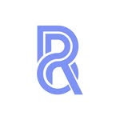
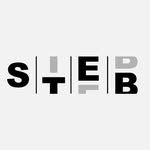
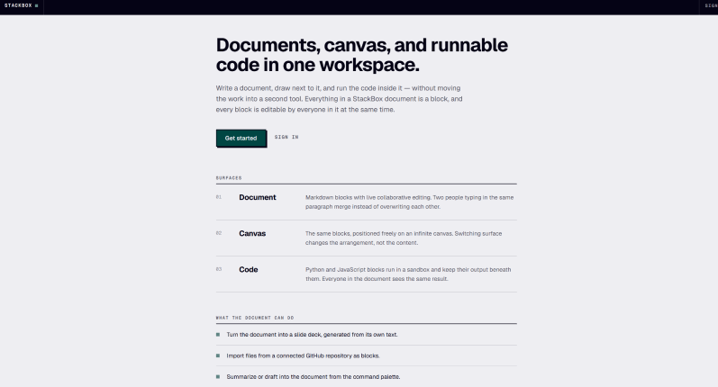

신중성
충동적으로 행동하지 않고 미리 생각합니다.
PROFILE
SUNRIN 121st COMPUTER SECURITY
MY STRENGTHS
충동적으로 행동하지 않고 미리 생각합니다.
공동체를 소중히 여기고 협동과 책임감을 발휘 합니다.
웃음과 즐거움을 통해 분위기를 밝게 만들기 위해
노력합니다.
저는 새로운 것을 배우는 것에서 끝내기보다, 직접 적용하고 결과물을 만들어 보는 과정을 중요하게 생각합니다. 작은 실패나 부족한 부분도 성장의 과정이라고 생각하며, 한 번 더 시도하고 개선하는 태도를 가지고 있습니다.
앞으로도 제가 가진 호기심과 꾸준함을 바탕으로 다양한 경험을 쌓고, 저만의 강점을 실제 결과물로 보여주는 사람이 되고 싶습니다.
CAREER ACTIVITY
프론트 엔드 개발 / 서버 / 네트워크
웹 프론트엔드 개발자 / 정보 교사
데이터 베이스 관리자
컴퓨터공학과 / 컴퓨터 교육과
LEARNING JOURNEY
수업과 진로 활동에서 경험한 내용을 사진과 함께 기록했습니다.
MAIN ACTIVITIES

일반 동아리
웹 개발 일반 동아리인 QWERTY에 참여하여 HTML, CSS, JavaScript를 배우고, 방학 프로젝트에 참여하여 실전 경험을 쌓을 수 있었습니다.
자율 동아리
자율 동아리 TRINTY에 참여하여 서버, 네트워크, 보안에 대한 전공 역량을 키울 수 있었습니다.

자율 동아리
자율 동아리 밴드부 S.T.E.B에 참여하여 합주 등 활동을 통해 협력 능력을 키울 수 있었습니다.
LANGUAGE & SKILLS
PROJECTS
 PROJECT 01
PROJECT 01매일 같이 카페인 음료를 마시는 사람들을 위한 절약 도우미를 개발하였습니다.
 PROJECT 02
PROJECT 02최근 유행하는 '왁뿌볼'이라는 주제를 활용한 어디서든 즐길수 있는 피젯토이를 개발하였습니다.

PROJECT 03문서, 아이디어, 코드, 실행 환경을 하나의 공간에 통합한 협업형 워크스페이스